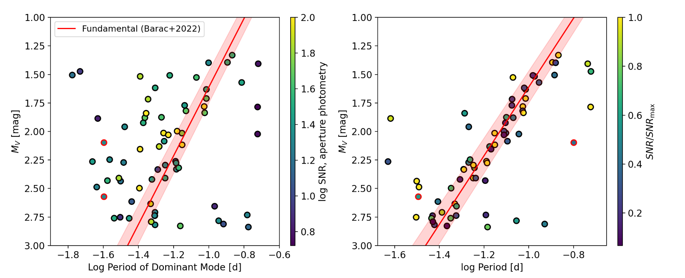
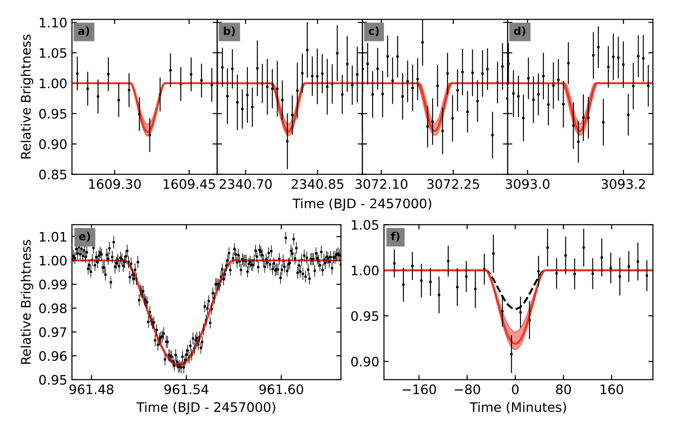

Welcome TESS followers to our latest news bulletin!
This week, we are looking at three recent papers from the archive. Enjoy!
First, we highlight the discovery of 79 delta Scuti stars residing in an open cluster. These pulsating variables are located within the classical Cepheid instability strip, representing an important population for understanding stellar evolution and pulsation mechanisms. Delta Scuti stars exhibit high-frequency pressure-mode pulsations driven by helium ionization zones, yet many stars within the theoretical instability boundaries do not seem to exhibit any pulsations, a longstanding puzzle in stellar astrophysics. Delta Scuti stars in open clusters provide ideal laboratories for studying pulsations in coeval stellar populations with uniform chemical composition and known distances.
Next, we outline a paper reporting a comprehensive analysis of the Wolf-Rayet binary system WR 20a. The target represents a rather extreme stellar system consisting of two nearly identical WN 6ha stars, and is among the most massive eclipsing binaries of this type discovered to date. Such systems are crucial for understanding the upper limits of stellar mass and the evolution of the most massive stars in the Universe. Such systems provide a reliable method for accurately determining their physical and orbital parameters through radial velocity measurements and light curve observations.
The third paper reports new photometric ephemeris for the 2M1510AB double brown dwarf eclipsing binary. Such systems represent important calibrators for sub-stellar evolution models that are used to determine the fundamental properties of directly imaged brown dwarfs and giant exoplanets. 2M1510AB is one the two known double brown dwarf eclipsing binary systems, making it highly valuable for testing theoretical models. However, the orbital period of the system was poorly constrained prior to the highlighted paper, with uncertainty of about 18 hours at the time of writing.
Discovery of 79 δ Scuti Stars in NGC 3532 Suggests a Decrease of Pulsator Occurrence with Age (Berry et al. 2025) :
Berry et al. (2025) present a detailed analysis of 79 delta Scuti pulsators discovered in the ~300 Myr open cluster NGC 3532, representing the largest sample of delta Scuti stars found within a single open cluster to date. The authors measured a pulsator fraction of ~50% across the center of the instability strip, significantly lower than that observed in the much younger stellar populations of the Pleiades (~110 Myr), NGC 2516 (~10 Myr), and the Cep-Her Complex (~<80 Myr). To account for detection bias, Berry et al. (2025) introduced the concept of "pulsator occurrence," which corrects for incompleteness and yielded a value of 63% for NGC 3532. The authors report an interesting relationship between stellar rotation and pulsation activity. Namely, the delta Scuti stars that do pulsate exhibit substantially faster rotation than their non-pulsating counterparts, with average rotation velocities of 184 km/sec compared to 95 km/sec for stars that do not exhibit pulsations. Berry et al. (2025) note that detected rapid rotation is likely important for maintaining pulsations over stellar lifetimes, as rotational mixing prevents helium from gravitationally diffusing out of the ionization zones that drive the pulsations. Additionally, the authors found that roughly two-thirds of the delta Scuti stars occupy a distinct upper branch in the color-magnitude diagram, characterized by their rapid rotation and gravity darkening effects. Their results indicate that pulsator occurrence decreases systematically with stellar age, suggesting that helium depletion from ionization zones becomes increasingly problematic over time scales similar to cluster ages. In slowly rotating stars, theoretical models predict that 50% of helium will be depleted by 100 million years and up to 80% by 500 million years. The authors also investigated the period-luminosity relationship and found considerable scatter around the expected fundamental mode relation, indicating that most pulsators are dominated by higher radial or non-radial overtone modes rather than fundamental radial modes. Their analysis of the frequency of maximum power versus effective temperature revealed two distinct branches similar to patterns observed in the Cep-Her Complex, though the delta Scuti stars of NGC 3532 generally pulsate at lower frequencies than their younger counterparts. Berry et al. (2025) also successfully measured the large frequency separation for one star, finding a value of 6.8 cycles per day, consistent with theoretical expectations for a delta Scuti star of this age. Thanks to TESS, the authors were able to find compelling evidence that stellar rotation plays a fundamental role in determining which stars within the instability strip will maintain pulsations throughout their main-sequence evolution.
The massive binary system WR 20a: light curve analysis in a colliding wind model (Antokhin et al. 2025) :
Antokhin et al. (2025) present a comprehensive reanalysis of the WR 20a system using a sophisticated binary system model that accounts for colliding stellar winds from both components, extending beyond the standard Roche model used in previous investigations. The authors analyzed optical light curves of the target in multiple filters, including data from ground-based observations, TESS measurements, and the ASAS-SN survey. Their model successfully reproduced the observed asymmetry in the light curves with respect to conjunction phases, a feature that is difficult to reproduce by previous models. The authors attribute the asymmetry to the wind-wind collision zone being inclined to the system axis due to Coriolis forces from orbital motion. This asymmetry manifests as brightness maxima occurring at orbital phases 0.27 and 0.77 rather than the symmetric 0.25 and 0.75 phases expected in standard models. Antokhin et al. (2025) report that accounting for stellar winds leads to significantly smaller stellar radii compared to previous estimates. Specifically, they find that the component radii are ~25 % smaller than those determined using the standard Roche model, measuring 14.1 and 14.0 solar radii respectively, compared to the earlier estimate of 18.7 solar radii for both stars. This reduction in stellar size has cascading effects on other system parameters. In particular, the reduced radii lead to significantly lower luminosities for both stars, with the total system luminosity being ~40% smaller than previously calculated, translating to a revised distance estimate of 6.3 kiloparsecs to the system; the latter is ~20 % closer than the previous estimate of 8.0 kiloparsecs. Anokhin et al. (2025) note that while the revised distance may seem to contradict the hypothesis that WR 20a belongs to the young open cluster Westerlund 2, recent studies of interstellar extinction in that direction support higher extinction values that reconcile the distance estimates. Additionally, the authors report that the mass-loss rates derived from the wind collision model are 1.24 x 10^-5 solar masses per year for each component, which is higher than the spectroscopically determined rate of 0.85 x 10^-5 solar masses per year from previous studies. The authors report that the best-fit stellar masses remain consistent with previous determinations at 82.2 and 81.4 solar masses for the primary and secondary components respectively. Similarly, they note that the orbital inclination of 74.9 degrees and the temperature of the secondary component at 41,840 K are comparable to previous estimates. Capitalizing on data from TESS, Antokhin et al. (2025) were able to find evidence for irregular variability of WR 20a, likely caused by non-stationary processes in the wind collision zone, with the steady-state model describing the time-averaged state of the system.
A new photometric ephemeris for the 2M1510 AB double brown dwarf eclipsing binary system (Millward & Kunovac 2025) :
Millward & Kunovac (2005) present a detailed analysis of the TESS full-frame image photometry of the double brown dwarf eclipsing binary 2M1510 AB, dramatically improving the orbital ephemeris of the system. The authors identified four new eclipses in the TESS data across sectors 11, 38, 65, and 91, complementing the single original eclipse discovered in 2017. Utilizing Box-Least Squares periodogram analysis, they detected and confirmed a periodic signal with a significance greater than 10 sigma. The refined orbital period is 20.897782+/-0.000036 days, representing a notable improvement in precision with an uncertainty of only 3 seconds compared to the previous 8.5 minute uncertainty. The corresponding reduction in uncertainty from 18 hours to 8 minutes between the discovery ephemeris and the present epoch makes future eclipse predictions far more reliable for scheduling observations. Millward & Kunovac (2025) report that the updated system parameters show strong agreement with the original discovery paper, with an orbital inclination of 88.47+/-0.03 degrees and a sum of stellar radii equal to 0.315+/-0.006 in units of the semi-major axis. The authors found that TESS observations show deeper eclipses, at ~8% depth compared to the 4.2 percent depth observed with SPECULOOS, with a significance of ~2.6 sigma, noting that the discrepancy does not affect their timing measurements and could be attributed to instrumental systematics or contamination issues. Additionally, this work challenges recent claims of a circumbinary planet around the system. A comparison with recent radial velocity data revealed substantial inconsistencies, with the photometric period being 14 minutes shorter than the Doppler-derived period, representing a 110-sigma discrepancy. Millward & Kunovac (2005) argue that a timing offset in the radial velocity measurements may have produced spurious apsidal precession signals that were interpreted as evidence for a polar-orbiting planet candidate designated 2M1510 ABb. Correcting for the timing inconsistencies in the radial velocity data, the authors find that the evidence for apsidal precession disappeared, suggesting the proposed candidate is likely a false positive. However, Millward & Kunovac (2005) note that even after the corrections, the radial velocity uncertainties had to be inflated significantly for the model to achieve reasonable fits, indicating potential systematic issues with the spectroscopic measurements. TESS data allowed the authors to measure precise ephemeris for the benchmark double brown dwarf eclipsing binary 2M1510 AB, enabling future detailed studies of this rare system.

Fig. 1: Taken from Berry et al. (2025). Left: Period-luminosity relation for delta Scuti stars discovered from TESS. The color scheme represents the SNR of the dominant pulsation model; the red line and band represent the fundamental relation and corresponding uncertainty from Barac et al. (2022). Right: Same as left panel but for using the Barac et al. (2022) relation to identify potential fundamental modes.

Fig. 2: Taken from Antokhin et al. (2025). Upper panel: phase-folded TESS photometry of the Wolf-Rayet binary system WR 20a. Middle and lower panels: mean phase-folded lightcurves from TESS (middle) and ASAS-SN (lower), along with the corresponding best-fit models (red).

Fig. 3: Taken from Millward & Kunovac (2025). Upper panels: Binned TESS lightcurve of the benchmark double brown dwarf eclipsing binary 2M1510 AB, along with the best-fit model (red). Lower left panel: the single eclipse detected in SPECULOOS data at the time of discovery. Lower right panel: Phase-folded TESS data and best-fit model (red).